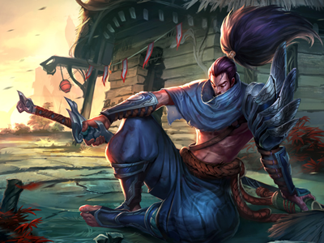
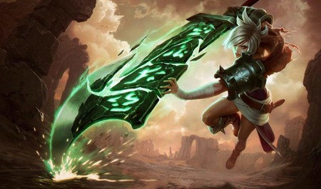
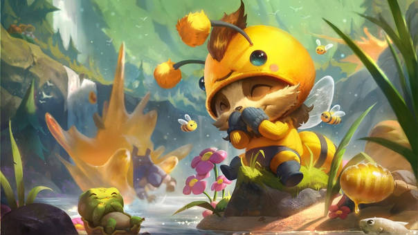

| Vayne |
| Yasuo |
| Riven |
| Teemo |
|  | Yasuo, un jonio de fuerte determinación, es un ágil espadachín capaz de controlar el viento y utilizarlo contra sus enemigos. Cuando era un joven altivo, fue acusado de asesinar a su maestro. Incapaz de demostrar su inocencia, se vio obligado a matar a su propio hermano en defensa propia. Incluso después de que se revelara el verdadero asesino de su maestro, Yasuo todavía no podía perdonarse a sí mismo por todo lo que había hecho, y ahora deambula por su tierra natal con solo el viento guiando su espada. |
|  | Antaño maestra de la espada de las huestes de Noxus, Riven es una expatriada en la tierra que previamente había tratado de conquistar. Fue ascendiendo de rango gracias a la fuerza de su convicción y a su brutal eficiencia, y fue recompensada con una espada rúnica legendaria y un escuadrón propio. Sin embargo, en el frente jonio, la fe de Riven por su tierra natal fue puesta a prueba y finalmente quebrada. Tras romper todo lazo con el imperio, ahora busca encontrar su lugar en un mundo destrozado, a pesar de que abundan los rumores de que Noxus ha sido reforjado... |
|  | Sin inmutarse siquiera por los obstáculos más peligrosos y amenazantes, Teemo explora el mundo con un entusiasmo infinito y una alegría desbordante. Con un inquebrantable sentido de la moralidad, este yordle se enorgullece de seguir el Código de los Exploradores de Bandle, a veces con tal afán que no es consciente de las consecuencias de sus acciones. Aunque algunos dicen que la existencia de los Exploradores es cuestionable, una cosa es cierta: la convicción de Teemo no es para tomarla a broma. |